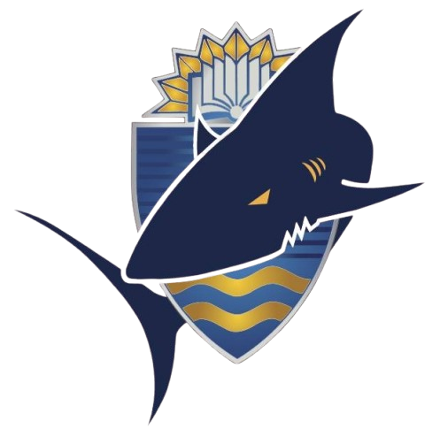
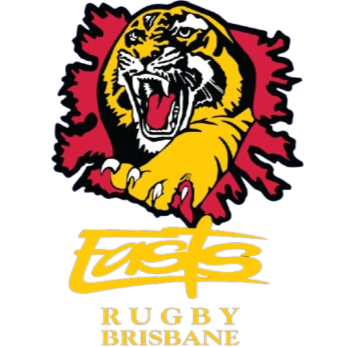

Bond University Bullsharks
Easts Tigers| # | Team | League | City | Country | P | W | D | L | Form | Rating |
|---|---|---|---|---|---|---|---|---|---|---|
| 1 | QRU Hospital Cup | Brisbane | Australia | 18 | 14 | 0 | 4 | 1615.5 | ||
| 2 | QRU Hospital Cup | Brisbane | Australia | 17 | 12 | 0 | 5 | 1609.8 | ||
| 3 |  Bond University Bullsharks | QRU Hospital Cup | Brisbane | Australia | 19 | 12 | 0 | 7 | 1601.3 | |
| 4 |  Easts Tigers | QRU Hospital Cup | Brisbane | Australia | 18 | 13 | 0 | 5 | 1561.2 | |
| 5 | QRU Hospital Cup | Brisbane | Australia | 16 | 6 | 0 | 10 | 1450.1 | ||
| 6 | QRU Hospital Cup | Brisbane | Australia | 16 | 6 | 0 | 10 | 1445.5 | ||
| 7 | QRU Hospital Cup | Brisbane | Australia | 16 | 5 | 0 | 11 | 1422.0 | ||
| 8 | QRU Hospital Cup | Brisbane | Australia | 16 | 5 | 0 | 11 | 1409.3 | ||
| 9 | QRU Hospital Cup | Brisbane | Australia | 16 | 3 | 0 | 13 | 1385.2 |